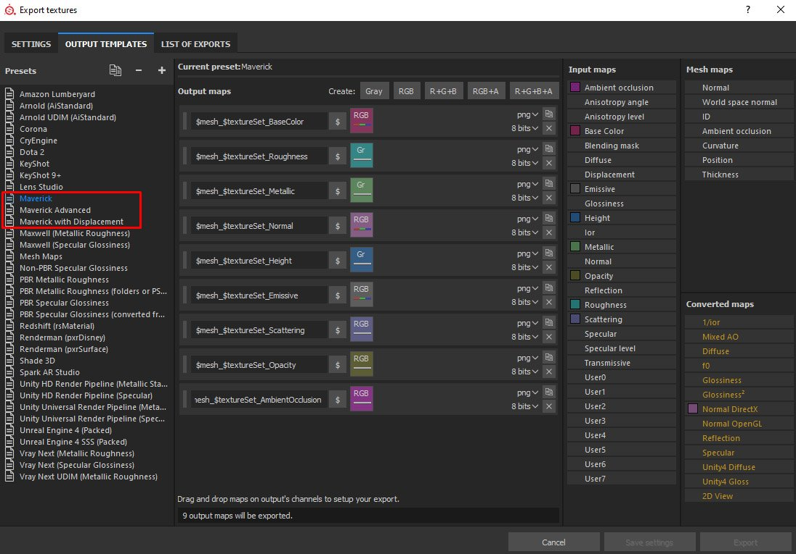
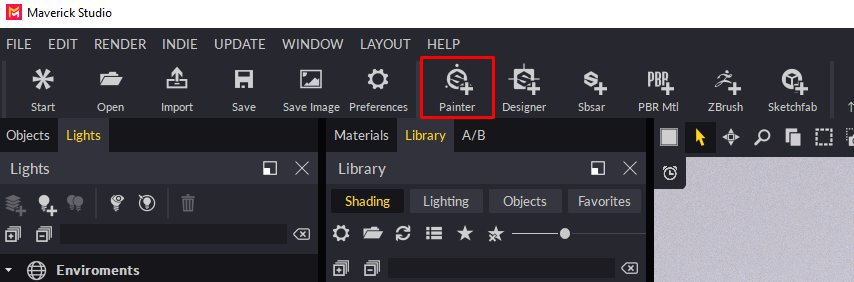
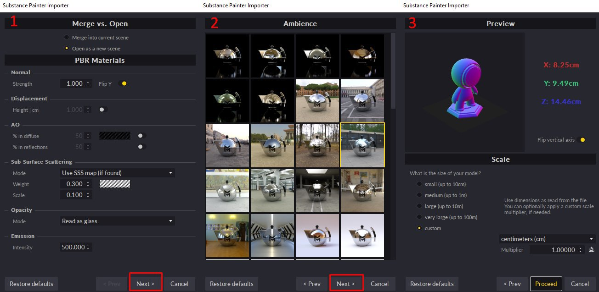

Export your mesh.
Substance Painter Integration
Note
Info
Important: Please, add our presets to the Substance Painter installer.
You can download those 3 presets from here:
https://www.dropbox.com/s/11vuk0k0ob772mv/Maverick_Export_Presets.zip
You can easily bring your Substance Painter project into Maverick by following these steps:
In Substance Painter:
-
-
Export your textures in the same folder where there mesh is, using one of the Maverick presets (view image):

Choose “Maverick preset” in the general case.
Choose “Maverick Advanced preset” if you've painted a specific map such as anisotropy or coating.
Choose “Maverick with Displacement preset” if your model has a relevant displacement map. This preset will export the height map in 32-bit for Maverick to capture all the high-quality geometry details.
In Maverick:
-
Click the Substance Painter Icon:

-
Select the mesh file you exported from Substance Painter.
-
Follow the instructions in the Import dialog:
- In the first dialog page you can set some material parameters.
- In the second dialog page you can choose the ambience where your model will appear.
- In the third dialog page you can choose the scale and axis orientation of your model.

-
Proceed and you will get your model correctly organized by texture set and with its materials automatically created and applied. All ready for the lighting phase.
If you modify your textures in Substance Painter, export them again, overwriting the previous ones. Then, in Maverick, use the Update Maps icon:
You can see the full process in the following video tutorial: